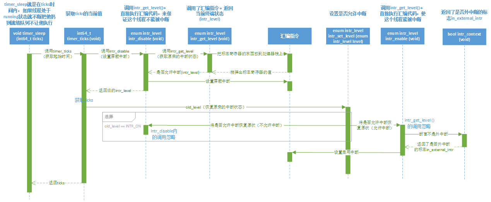
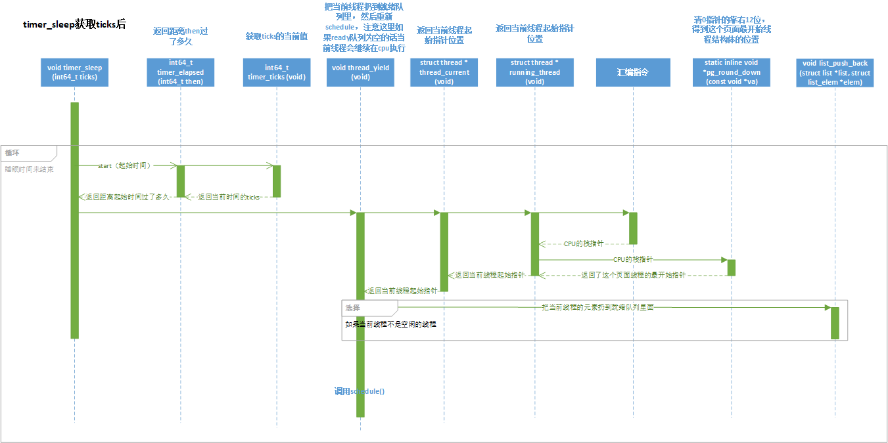
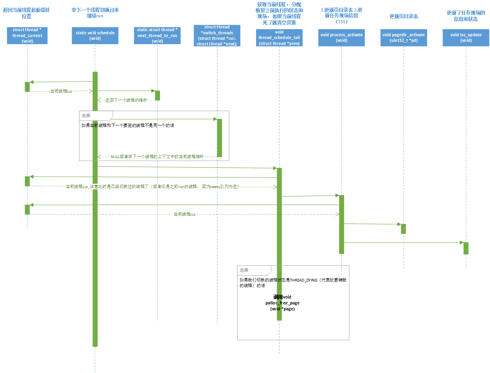
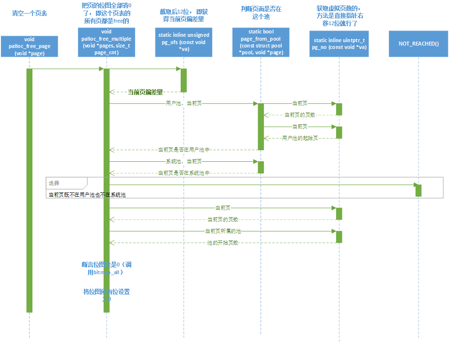
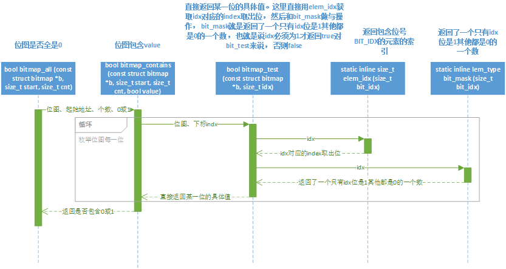
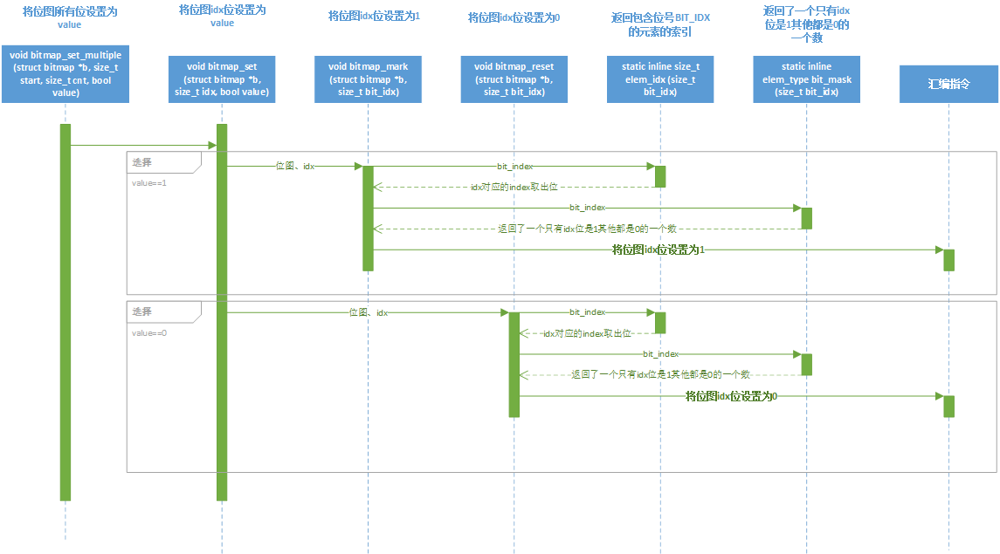

原文来源于：https://blog.csdn.net/u013058160/article/details/45393555，对原文博主表示诚挚的感谢。本文在原文的基础上加以整理。
timer_sleep函数timer_sleep函数timer_sleep函数在devices/timer.c。系统现在是使用busy wait实现的，即线程不停地循环，直到时间片耗尽。更改timer_sleep的实现方式。
xxxxxxxxxx151/* Sleeps for approximately TICKS timer ticks. Interrupts must2 be turned on. */3void4timer_sleep (int64_t ticks)5{6 // start获取了起始时间7 int64_t start = timer_ticks ();89 // 断言必须可以被中断10 ASSERT (intr_get_level () == INTR_ON);11 // 注意这个ticks是函数的形参不是全局变量12 // 这个循环实质就是在ticks的时间内不断执行thread_yield13 while (timer_elapsed (start) < ticks)14 thread_yield ();15}第7行： 调用了timer_ticks函数， 让我们来看看这个函数做了什么。
x
1/* Returns the number of timer ticks since the OS booted. */2// 获取ticks的当前值返回而已， 而上下两句只是确保这个过程是不能被中断的而已3int64_t4timer_ticks (void)5{6 //intr_disable获取了当前的中断状态， 然后将当前中断状态改为不能被中断， 然后返回执行之前的中断状态7 //禁止当前行为被中断， 保存禁止被中断前的中断状态（用old_level储存）8 enum intr_level old_level = intr_disable ();9 int64_t t = ticks;10 intr_set_level (old_level);11 return t;12}然后我们注意到这里有个intr_level的东西通过intr_disable返回了一个东西，没关系，我们继续往下找。
xxxxxxxxxx61/* Interrupts on or off? */2enum intr_level3 {4 INTR_OFF, /* Interrupts disabled. 不允许中断*/5 INTR_ON /* Interrupts enabled. 允许中断*/6 };x
1/* Disables interrupts and returns the previous interrupt status. */2//这里很明显，intr_level代表能否被中断，而intr_disable做了两件事情：3//1. 调用intr_get_level()4//2. 直接执行汇编代码，调用汇编指令来保证这个线程不能被中断。5enum intr_level6intr_disable (void)7{8 enum intr_level old_level = intr_get_level (); // intr_get_level返回了intr_level的值910 /* Disable interrupts by clearing the interrupt flag.11 See [IA32-v2b] "CLI" and [IA32-v3a] 5.8.1 "Masking Maskable12 Hardware Interrupts". */13 // 注意： 这个asm volatile是在C语言中内嵌了汇编语言，调用了CLI指令，14 // CLI指令不是command line interface, 而是clear interrupt, 15 // 作用是将标志寄存器的IF（interrupt flag）位置为0, IF=0时将不响应可屏蔽中断。16 asm volatile ("cli" : : : "memory");1718 return old_level;19}这里很明显，intr_level代表能否被中断，而intr_disable做了两件事情：
调用intr_get_level()
注意： 这个asm volatile是在C语言中内嵌了汇编语言，调用了CLI指令，CLI指令不是command line interface, 而是clear interrupt, 作用是将标志寄存器的IF（interrupt flag）位置为0, IF=0时将不响应可屏蔽中断。
好，让我们继续来看intr_get_level又做了什么鬼。
x
1/* Returns the current interrupt status. */2// 这里就是intr_disable函数调用的最深的地方了!3// 这个函数一样是调用了汇编指令，把标志寄存器的东西放到处理器栈上，4// 然后把值pop到flags（代表标志寄存器IF位）上，通过判断flags来返回当前终端状态(intr_level)。5enum intr_level6intr_get_level (void)7{8 uint32_t flags;910 /* Push the flags register on the processor stack, then pop the11 value off the stack into `flags'. See [IA32-v2b] "PUSHF"12 and "POP" and [IA32-v3a] 5.8.1 "Masking Maskable Hardware13 Interrupts". */14 asm volatile ("pushfl; popl %0" : "=g" (flags));1516 return flags & FLAG_IF ? INTR_ON : INTR_OFF;17}这里就是intr_disable函数调用的最深的地方了!
这个函数一样是调用了汇编指令，把标志寄存器的东西放到处理器栈上，然后把值pop到flags（代表标志寄存器IF位）上，通过判断flags来返回当前终端状态(intr_level)。
好， 到这里。 函数嵌套了这么多层， 我们整理一下逻辑：
有以上结论我们可以知道： timer_ticks的 enum intr_level old_level = intr_disable (); 做了这么一件事情： 禁止当前行为被中断， 保存禁止被中断前的中断状态（用old_level储存）。
让我们再来看timer_ticks剩下的做了什么， 剩下的就是用t获取了一个全局变量ticks, 然后返回， 其中调用了set_level函数。
x
1/* Enables or disables interrupts as specified by LEVEL and2 returns the previous interrupt status. */3// 如果之前是允许中断的（INTR_ON）则enable否则就disable4enum intr_level5intr_set_level (enum intr_level level)6{7 return level == INTR_ON ? intr_enable () : intr_disable ();8}有了之前的基础，这个函数就很容易看了， 如果之前是允许中断的（INTR_ON）则enable否则就disable.
而intr_enable正如你们所想，实现和之前基本一致：
xxxxxxxxxx191/* Enables interrupts and returns the previous interrupt status. */2enum intr_level3intr_enable (void)4{5 enum intr_level old_level = intr_get_level ();6 // intr_context()直接返回了是否外中断的标志in_external_intr， 7 // 就是说ASSERT断言这个中断不是外中断（IO等， 也称为硬中断）8 // 而是操作系统正常线程切换流程里的内中断（也称为软中断）9 ASSERT (!intr_context ());1011 /* Enable interrupts by setting the interrupt flag.1213 See [IA32-v2b] "STI" and [IA32-v3a] 5.8.1 "Masking Maskable14 Hardware Interrupts". */15// sti指令就是cli指令的反面，将IF位置为116 asm volatile ("sti");1718 return old_level;19}说明一下， sti指令就是cli指令的反面，将IF位置为1。
然后有个ASSERT断言了intr_context函数返回结果的false。
再来看intr_context
intr_context如下
xxxxxxxxxx81/* Returns true during processing of an external interrupt2 and false at all other times. */3// 这里直接返回了是否外中断的标志in_external_intr， 4bool5intr_context (void)6{7 return in_external_intr;8}这里直接返回了是否外中断的标志in_external_intr， 就是说ASSERT断言这个中断不是外中断（IO等， 也称为硬中断）而是操作系统正常线程切换流程里的内中断（也称为软中断）。
好的， 至此， 我们总结一下：
这么多分析其实分析出了pintos操作系统如何利用中断机制来确保一个原子性的操作的。
我们来看， 我们已经分析完了timer_ticks这个函数， 它其实就是获取ticks的当前值返回而已， 而第5行和第7行做的其实只是确保这个过程是不能被中断的而已。
那么我们来达成一个共识， 被以下两个语句包裹的内容目的是为了保证这个过程不被中断。
xxxxxxxxxx31enum intr_level old_level = intr_disable ();2...3intr_set_level (old_level);那么ticks又是什么？ 来看ticks定义。
xxxxxxxxxx31/* Number of timer ticks since OS booted. */2// 从pintos被启动开始， ticks就一直在计时， 代表着操作系统执行单位时间的前进计量3static int64_t ticks;从pintos被启动开始， ticks就一直在计时， 代表着操作系统执行单位时间的前进计量。
上面所涉及函数的顺序图如下

好， 现在回过来看timer_sleep这个函数， start获取了起始时间， 然后断言必须可以被中断， 不然会一直死循环下去， 然后就是一个循环。
xxxxxxxxxx21 while (timer_elapsed (start) < ticks)2 thread_yield ();timer_elapsed函数：
xxxxxxxxxx81/* Returns the number of timer ticks elapsed since THEN, which2 should be a value once returned by timer_ticks(). */3// 返回了当前时间 距离then 的时间间隔4int64_t5timer_elapsed (int64_t then)6{7 return timer_ticks () - then;8}很明显timer_elapsed返回了当前时间距离then的时间间隔， 那么这个循环实质就是在ticks的时间内不断执行thread_yield。
thread_yield函数：
xxxxxxxxxx201/* Yields the CPU. The current thread is not put to sleep and2 may be scheduled again immediately at the scheduler's whim. */3void4thread_yield (void)5{6 struct thread *cur = thread_current ();7 enum intr_level old_level;89 ASSERT (!intr_context ());1011 // 保证的一个原子性操作12 old_level = intr_disable ();13 // 如何当前线程不是空闲的线程就调用list_push_back把当前线程的元素扔到就绪队列里面14 if (cur != idle_thread)15 list_push_back (&ready_list, &cur->elem);16 // 把线程改成THREAD_READY状态17 cur->status = THREAD_READY;18 schedule ();19 intr_set_level (old_level);20}thread_current函数做的事情已经可以顾名思义了， 不过具有钻研精神和强迫症的你还是要确定它的具体实现：
x
1/* Returns the running thread.2 This is running_thread() plus a couple of sanity checks.3 See the big comment at the top of thread.h for details. */4// 返回当前线程起始指针位置。5struct thread *6thread_current (void)7{8 struct thread *t = running_thread ();910 /* Make sure T is really a thread.11 If either of these assertions fire, then your thread may12 have overflowed its stack. Each thread has less than 4 kB13 of stack, so a few big automatic arrays or moderate14 recursion can cause stack overflow. */15 // 断言t指针是一个线程16 ASSERT (is_thread (t));17 // 断言这个线程处于THREAD_RUNNING状态18 ASSERT (t->status == THREAD_RUNNING);1920 return t;21}running_thread函数：
x
1/* Returns the running thread. */2// 返回当前线程起始指针3struct thread *4running_thread (void)5{6 uint32_t *esp;78 /* Copy the CPU's stack pointer into `esp', and then round that9 down to the start of a page. Because `struct thread' is10 always at the beginning of a page and the stack pointer is11 somewhere in the middle, this locates the curent thread. */12 // 把CPU栈的指针复制到esp中， 然后调用pg_round_down13 asm ("mov %%esp, %0" : "=g" (esp));14 return pg_round_down (esp);15}is_thread函数：
xxxxxxxxxx61/* Returns true if T appears to point to a valid thread. */2static bool3is_thread (struct thread *t)4{5 return t != NULL && t->magic == THREAD_MAGIC;6}先来看thread_current调用的running_thread, 把CPU栈的指针复制到esp中， 然后调用pg_round_down
1/* Round down to nearest page boundary. */2// pg_round_down返回了这个页面线程的最开始指针3static inline void *pg_round_down (const void *va) {4 // 对PGMASK取反的结果就是一个页面大小全部为0的这么个数5 // 然后和传过来的指针做与操作的结果就是清0指针的靠右12位6 // 一个页面12位， 而struct thread是在一个页面的最开始的7 // 所以对任何一个页面的指针做pg_round_down的结果就是返回到这个页面最开始线程结构体的位置8 return (void *) ((uintptr_t) va & ~PGMASK);9}好，这里又涉及到这个操作系统是怎么设计页面的了：
xxxxxxxxxx131/* Functions and macros for working with virtual addresses.23 See pte.h for functions and macros specifically for x864 hardware page tables. */568/* Page offset (bits 0:12). */9/* Index of first offset bit. */10/* Number of offset bits. */11/* Bytes in a page. */12// 一个页面12位， PGMASK调用BITMASK其实就是一个页面全部位都是1的这么个MASK， 注意1ul的意思是unsigned long的113/* Page offset bits (0:12). */一个页面12位， PGMASK调用BITMASK其实就是一个页面全部位都是1的这么个MASK， 注意1ul的意思是unsigned long的1。
然后来看pg_round_down， 对PGMASK取反的结果就是一个页面大小全部为0的这么个数， 然后和传过来的指针做与操作的结果就是清0指针的靠右12位。
这里有什么效果呢？ 我们知道一个页面12位， 而struct thread是在一个页面的最开始的， 所以对任何一个页面的指针做pg_round_down的结果就是返回到这个页面最开始线程结构体的位置。
好， 我们现在分析出了pg_round_down其实就是返回了这个页面线程的最开始指针， 那么running_thread的结果返回当前线程起始指针。
再来看thread_current里最后的两个断言， 一个断言t指针是一个线程， 一个断言这个线程处于THREAD_RUNNING状态。
然后is_thread用的t->magic其实是用于检测时候有栈溢出的这么个元素。
xxxxxxxxxx21 /* Owned by thread.c. */2 unsigned magic; /* Detects stack overflow. */好， 现在thread_current分析完了， 这个就是返回当前线程起始指针位置。
我们继续看thread_yield， 然后剩下的很多东西其实我们已经分析过了， 在分析的过程其实是对这个操作系统工作过程的剖析， 很多地方都是相通的。
ASSERT (is_thread (t));断言这是个软中断，
xxxxxxxxxx21old_level = intr_disable ();2intr_set_level (old_level);包裹起来的就是我们之前分析的线程机制保证的一个原子性操作。
然后我们来看中间部分做了什么：
1 if (cur != idle_thread)2 list_push_back (&ready_list, &cur->elem);3 // 把线程改成THREAD_READY状态4 cur->status = THREAD_READY;5 schedule ();如何当前线程不是空闲的线程就调用list_push_back把当前线程的元素扔到就绪队列里面， 并把线程改成THREAD_READY状态。
关于队列list的相关操作mission2会涉及到， 这里先不作解释， 顾名思义即可。
thread_yield除了schedule函数所涉及的其他函数的顺序图如下

然后再调用schedule:
xxxxxxxxxx291/* Schedules a new process. At entry, interrupts must be off and2 the running process's state must have been changed from3 running to some other state. This function finds another4 thread to run and switches to it.5 安排一个新的进程。 在进入时，中断必须是关闭的，6 并且正在运行的进程的状态必须已经从运行状态转变为其他状态。7 这个函数找到另一个要运行的线程并切换到它。8 It's not safe to call printf() until thread_schedule_tail()9 has completed. 10 在read_schedule_tail()完成之前，调用printf()是不安全的11 */12static void13schedule (void)14{15 // 首先获取当前线程cur和调用next_thread_to_run获取下一个要run的线程16 struct thread *cur = running_thread ();17 struct thread *next = next_thread_to_run ();18 struct thread *prev = NULL;19 // 确保不能被中断20 ASSERT (intr_get_level () == INTR_OFF);21 // 当前线程是THREAD_RUNNING等22 ASSERT (cur->status != THREAD_RUNNING);23 ASSERT (is_thread (next));2425 // 如果当前线程和下一个要跑的线程不是同一个的话调用switch_threads返回给prev26 if (cur != next)27 prev = switch_threads (cur, next);28 thread_schedule_tail (prev);29}首先获取当前线程cur和调用next_thread_to_run获取下一个要run的线程：
x
1/* Chooses and returns the next thread to be scheduled. Should2 return a thread from the run queue, unless the run queue is3 empty. (If the running thread can continue running, then it4 will be in the run queue.) If the run queue is empty, return5 idle_thread. */6// 如果就绪队列空闲直接返回一个空闲线程指针， 否则拿就绪队列第一个线程出来返回7static struct thread *8next_thread_to_run (void)9{10 if (list_empty (&ready_list))11 return idle_thread;12 else13 return list_entry (list_pop_front (&ready_list), struct thread, elem);14}如果就绪队列空闲直接返回一个空闲线程指针， 否则拿就绪队列第一个线程出来返回。
然后3个断言之前讲过就不多说了， 确保不能被中断， 当前线程是RUNNING_THREAD等。
如果当前线程和下一个要跑的线程不是同一个的话调用switch_threads返回给prev。
xxxxxxxxxx51/* Switches from CUR, which must be the running thread, to NEXT,2 which must also be running switch_threads(), returning CUR in3 NEXT's context. */4// 这个函数实现是用汇编语言实现的在threads/switch.S里5struct thread *switch_threads (struct thread *cur, struct thread *next);注意， 这个函数实现是用汇编语言实现的在threads/switch.S里：
xxxxxxxxxx741#### struct thread *switch_threads (struct thread *cur, struct thread *next);2####3#### Switches from CUR, which must be the running thread, to NEXT,4#### which must also be running switch_threads(), returning CUR in5#### NEXT's context.6####7#### This function works by assuming that the thread we're switching8#### into is also running switch_threads(). Thus, all it has to do is9#### preserve a few registers on the stack, then switch stacks and10#### restore the registers. As part of switching stacks we record the11#### current stack pointer in CUR's thread structure.1213.globl switch_threads14.func switch_threads15switch_threads:16# Save caller's register state.17#18# Note that the SVR4 ABI allows us to destroy %eax, %ecx, %edx,19# but requires us to preserve %ebx, %ebp, %esi, %edi. See20# [SysV-ABI-386] pages 3-11 and 3-12 for details.21#22# This stack frame must match the one set up by thread_create()23# in size.24# 先4个寄存器压栈保存寄存器状态（保护作用）， 这4个寄存器是switch_threads_frame的成员25pushl %ebx26pushl %ebp27pushl %esi28pushl %edi2930# Get offsetof (struct thread, stack).31# 全局变量thread_stack_ofs记录线程和栈之间的间隙， 我们都知道线程切换有个保存现场的过程32.globl thread_stack_ofs33mov thread_stack_ofs, %edx3435# Save current stack pointer to old thread's stack, if any.36# 先把当前的线程指针放到eax中37# 并把线程指针保存在相对基地址偏移量为edx的地址中38movl SWITCH_CUR(%esp), %eax39movl %esp, (%eax,%edx,1)4041# Restore stack pointer from new thread's stack.42# 切换到下一个线程的线程栈指针， 保存在ecx中，43# 再把这个线程相对基地址偏移量edx地址（上一次保存现场的时候存放的）放到esp当中继续执行44movl SWITCH_NEXT(%esp), %ecx45movl (%ecx,%edx,1), %esp4647# 这里ecx, eax起容器的作用， edx指向当前现场保存的地址偏移量。48# 简单来说就是保存当前线程状态， 恢复新线程之前保存的线程状态4950# Restore caller's register state.51popl %edi52popl %esi53popl %ebp54popl %ebx55# 然后再把4个寄存器拿出来， 这个是硬件设计要求的， 必须保护switch_threads_frame里面的寄存器才可以destroy掉eax, edx, ecx56# 然后注意到现在eax(函数返回值是eax)就是被切换的线程栈指针57ret58.endfunc5960.globl switch_entry61.func switch_entry62switch_entry:63# Discard switch_threads() arguments.64addl $8, %esp6566# Call thread_schedule_tail(prev).67pushl %eax68.globl thread_schedule_tail69call thread_schedule_tail70addl $4, %esp7172# Start thread proper.73ret74.endfunc
分析一下这个汇编代码： 先4个寄存器压栈保存寄存器状态（保护作用）， 这4个寄存器是switch_threads_frame的成员：
xxxxxxxxxx111/* switch_thread()'s stack frame. */2struct switch_threads_frame3 {4 uint32_t edi; /* 0: Saved %edi. */5 uint32_t esi; /* 4: Saved %esi. */6 uint32_t ebp; /* 8: Saved %ebp. */7 uint32_t ebx; /* 12: Saved %ebx. */8 void (*eip) (void); /* 16: Return address. */9 struct thread *cur; /* 20: switch_threads()'s CUR argument. */10 struct thread *next; /* 24: switch_threads()'s NEXT argument. */11 };然后全局变量thread_stack_ofs记录线程和栈之间的间隙， 我们都知道线程切换有个保存现场的过程，
来看
xxxxxxxxxx21 movl SWITCH_CUR(%esp), %eax2 movl %esp, (%eax,%edx,1)先把当前的线程指针放到eax中， 并把线程指针保存在相对基地址偏移量为edx的地址中。
xxxxxxxxxx21 movl SWITCH_NEXT(%esp), %ecx2 movl (%ecx,%edx,1), %esp上面这段代码：切换到下一个线程的线程栈指针， 保存在ecx中， 再把这个线程相对基地址偏移量edx地址（上一次保存现场的时候存放的）放到esp当中继续执行。
这里ecx, eax起容器的作用， edx指向当前现场保存的地址偏移量。
简单来说就是保存当前线程状态， 恢复新线程之前保存的线程状态。
然后再把4个寄存器拿出来， 这个是硬件设计要求的， 必须保护switch_threads_frame里面的寄存器才可以destroy掉eax, edx, ecx。
然后注意到现在eax(函数返回值是eax)就是被切换的线程栈指针。
我们由此得到一个结论， schedule先把当前线程丢到就绪队列，然后把线程切换如果下一个线程和当前线程不一样的话。
schedule除了最后一个thread_schedule_tail所涉及的函数的顺序图如下

然后再看shedule最后一行的函数thread_schedule_tail做了什么鬼， 这里参数prev是NULL或者在下一个线程的上下文中的当前线程指针。
1/* Completes a thread switch by activating the new thread's page2 tables, and, if the previous thread is dying, destroying it.34 At this function's invocation, we just switched from thread5 PREV, the new thread is already running, and interrupts are6 still disabled. This function is normally invoked by7 thread_schedule() as its final action before returning, but8 the first time a thread is scheduled it is called by9 switch_entry() (see switch.S).1011 It's not safe to call printf() until the thread switch is12 complete. In practice that means that printf()s should be13 added at the end of the function.1415 After this function and its caller returns, the thread switch16 is complete. */17void18thread_schedule_tail (struct thread *prev)19{20 // 先是获得当前线程cur, 注意此时是已经切换过的线程了（或者还是之前run的线程， 因为ready队列为空）21 struct thread *cur = running_thread ();2223 ASSERT (intr_get_level () == INTR_OFF);2425 /* Mark us as running. */26 // 然后把线程状态改成THREAD_RUNNING， 27 cur->status = THREAD_RUNNING;2829 /* Start new time slice. */30 // 然后thread_ticks清零开始新的线程切换时间片31 thread_ticks = 0;3233 /* Activate the new address space. */35 // process_activate36 process_activate ();3739 /* If the thread we switched from is dying, destroy its struct40 thread. This must happen late so that thread_exit() doesn't41 pull out the rug under itself. (We don't free42 initial_thread because its memory was not obtained via43 palloc().) */44 // 这里是如果我们切换的线程状态是THREAD_DYING（代表欲要销毁的线程）的话， 调用palloc_free_page45 if (prev != NULL && prev->status == THREAD_DYING && prev != initial_thread)46 {47 ASSERT (prev != cur);48 palloc_free_page (prev);49 }50}先是获得当前线程cur, 注意此时是已经切换过的线程了（或者还是之前run的线程， 因为ready队列为空）。
然后把线程状态改成THREAD_RUNNING， 然后thread_ticks清零开始新的线程切换时间片。
然后调用process_activate触发新的地址空间。
x
1/* Sets up the CPU for running user code in the current2 thread.3 This function is called on every context switch. */4// 1.更新页目录表 2.更新任务现场信息（TSS）5void6process_activate (void)7{8 // 这里先是拿到当前线程， 调用pagedir_activate9 struct thread *t = thread_current ();1011 /* Activate thread's page tables. */12 pagedir_activate (t->pagedir);1314 /* Set thread's kernel stack for use in processing15 interrupts. */16 tss_update ();17}这里先是拿到当前线程， 调用pagedir_activate:
x
1/* Loads page directory PD into the CPU's page directory base2 register. */3// 更新了现在的页目录表4void5pagedir_activate (uint32_t *pd)6{7 if (pd == NULL)8 pd = init_page_dir;910 /* Store the physical address of the page directory into CR311 aka PDBR (page directory base register). This activates our12 new page tables immediately. See [IA32-v2a] "MOV--Move13 to/from Control Registers" and [IA32-v3a] 3.7.5 "Base14 Address of the Page Directory". */15 // 这个汇编指令将当前线程的页目录指针存储到CR3（页目录表物理内存基地址寄存器）中16 // 也就是说这个函数更新了现在的页目录表17 asm volatile ("movl %0, %%cr3" : : "r" (vtop (pd)) : "memory");18}这个汇编指令将当前线程的页目录指针存储到CR3（页目录表物理内存基地址寄存器）中，也就是说这个函数更新了现在的页目录表。
x
1/* Sets the ring 0 stack pointer in the TSS to point to the end2 of the thread stack. */3 // 更新了任务现场的信息和状态4void5tss_update (void)6{7 ASSERT (tss != NULL);8 // 这里其实是把TSS的一个栈指针指向了当前线程栈的尾部， 也就是更新了任务现场的信息和状态9 tss->esp0 = (uint8_t *) thread_current () + PGSIZE;10}首先要弄清楚tss是什么， tss是task state segment， 叫任务状态段， 任务（进程）切换时的任务现场信息。
这里其实是把TSS的一个栈指针指向了当前线程栈的尾部， 也就是更新了任务现场的信息和状态。
好， 到现在process_activate分析完了， 总结一下： 其实就是做了2件事情： 1.更新页目录表 2.更新任务现场信息（TSS）
我们现在继续来看thread_schedule_tail， 最后是这4行：
x
1 /* If the thread we switched from is dying, destroy its struct2 thread. This must happen late so that thread_exit() doesn't3 pull out the rug under itself. (We don't free4 initial_thread because its memory was not obtained via5 palloc().) */6 // 这里是如果我们切换的线程状态是THREAD_DYING（代表欲要销毁的线程）的话， 调用palloc_free_page7 if (prev != NULL && prev->status == THREAD_DYING && prev != initial_thread)8 {9 ASSERT (prev != cur);10 palloc_free_page (prev);11 }这里是如果我们切换的线程状态是THREAD_DYING（代表欲要销毁的线程）的话， 调用palloc_free_page：
x
1/* Frees the page at PAGE. */2void3palloc_free_page (void *page)4{5 palloc_free_multiple (page, 1);6}x
1/* Frees the PAGE_CNT pages starting at PAGES. */2// 把页的位图全部清0了， 清0代表这这个页表的所有页都是free的， 等于清空了页目录表中的所有页面3void4palloc_free_multiple (void *pages, size_t page_cnt)5{6 struct pool *pool;7 size_t page_idx;89// 截取后12位， 即获得当前页偏差量， 断言为0就是说页指针应该指向线程结构体10 ASSERT (pg_ofs (pages) == 0);11 if (pages == NULL || page_cnt == 0)12 return;1314// 这里要弄清楚一点是系统memory分成2个池， 一个是kernel pool, 一个是user pool， 15// user pool是提供给用户页的， 别的都是kernel pool16 if (page_from_pool (&kernel_pool, pages))17 pool = &kernel_pool;18 else if (page_from_pool (&user_pool, pages))19 pool = &user_pool;20 else21 NOT_REACHED ();22// 用page_idx保存了计算出来了页id23 page_idx = pg_no (pages) - pg_no (pool->base);2425// 清空了页指针27 memset (pages, 0xcc, PGSIZE * page_cnt);2830 ASSERT (bitmap_all (pool->used_map, page_idx, page_cnt));31 bitmap_set_multiple (pool->used_map, page_idx, page_cnt, false);32}这里创建了一个pool的结构体：
xxxxxxxxxx91/* A memory pool. */2// palloc实现的是一个页分配器3// pool的角色就是记忆分配的内容。这里结构体用位图记录空的页， 关键是这里又有一个操作系统很重要的知识概念出现了，就是lock4struct pool5 {6 struct lock lock; /* Mutual exclusion. */7 struct bitmap *used_map; /* Bitmap of free pages. */8 uint8_t *base; /* Base of pool. */9 };首先palloc实现的是一个页分配器， 这里pool的角色就是记忆分配的内容。 这里结构体用位图记录空的页， 关键是这里又有一个操作系统很重要的知识概念出现了，就是lock：
xxxxxxxxxx71// 然后锁其实是由二值信号量实现的,具体信号量方法实现在threads/synch.c中2/* Lock. */3struct lock4 {5 struct thread *holder; /* Thread holding lock (for debugging). */6 struct semaphore semaphore; /* Binary semaphore controlling access. */7 };xxxxxxxxxx61/* A counting semaphore. */2struct semaphore3 {4 unsigned value; /* Current value. */5 struct list waiters; /* List of waiting threads. */6 };具体信号量方法实现在threads/synch.c中， 这里不作更多讲解了， 毕竟函数分析还没涉及到这里。
继续看palloc_free_multiple， ASSERT (pg_ofs (pages) == 0);其实就是截取后12位， 即获得当前页偏差量， 断言为0就是说页指针应该指向线程结构体
x
1/* Offset within a page. */2// 截取后12位， 即获得当前页偏差量3static inline unsigned pg_ofs (const void *va) {4 return (uintptr_t) va & PGMASK;5}然后分析
xxxxxxxxxx61 if (page_from_pool (&kernel_pool, pages))2 pool = &kernel_pool;3 else if (page_from_pool (&user_pool, pages))4 pool = &user_pool;5 else6 NOT_REACHED ();这里要弄清楚一点是系统memory分成2个池， 一个是kernel pool, 一个是user pool， user pool是提供给用户页的， 别的都是kernel pool。
然后看下这里调用的page_from_pool函数：
x
1/* Returns true if PAGE was allocated from POOL,2 false otherwise. */3// 判断页面是否在这个池的4static bool5page_from_pool (const struct pool *pool, void *page)6{7 size_t page_no = pg_no (page);8 // 获取当前池中的的起始页和结束页位置9 size_t start_page = pg_no (pool->base);10 size_t end_page = start_page + bitmap_size (pool->used_map);1112// 判断页面是否在这个池的Number范围来判断时候属于某个池13 return page_no >= start_page && page_no < end_page;14}
x
1/* Virtual page number. */2// 获取虚拟页数的， 方法是直接指针右移12位就行了3static inline uintptr_t pg_no (const void *va) {4 return (uintptr_t) va >> PGBITS;5}然后这里获取当前池中的的起始页和结束页位置， 然后判断页面时候在这个池的Number范围之类来判断时候属于某个池。
再看NOT_REACHED函数
x
1/* GCC lets us add "attributes" to functions, function2 parameters, etc. to indicate their properties.3 See the GCC manual for details. */49/* Halts the OS, printing the source file name, line number, and10 function name, plus a user-specific message. */1113void debug_panic (const char *file, int line, const char *function,14 const char *message, ...) PRINTF_FORMAT (4, 5) NO_RETURN;15void debug_backtrace (void);16void debug_backtrace_all (void);1718202122/* This is outside the header guard so that debug.h may be23 included multiple times with different settings of NDEBUG. */2427 30 31 32/* lib/debug.h */这里根据NDEBUG状态分两种define， 一个是ASSERT空函数， NOT_REACHED执行死循环， 一个是如果ASSERT参数CONDITION为false的话就调用PANIC输出文件，行数，函数名和用户信息， NOT_REACHED也会输出信息。
有些童鞋在跑测试的时候会出现卡在一个地方不动的状态， 其实不是因为你电脑的问题， 而是当一些错误触发NOT_REACHED之类的问题的时候， 因为非debug环境就一直执行死循环了， 反映出来的行为就是命令行卡住不动没有输出。
注意这里的语法类似attribute和((format(printf, m , n)))是面向gcc编译器处理的写法， 这里做的事情其实是参数声明和调用匹配性检查。
好， 继续来看palloc_free_multiple， 用page_idx保存了计算出来了页id， 清空了页指针。
palloc_free_multiple除了最后两行，设计的函数的顺序图如下：

然后还剩下最后两行：
1 ASSERT (bitmap_all (pool->used_map, page_idx, page_cnt));2 bitmap_set_multiple (pool->used_map, page_idx, page_cnt, false);第一个断言：
xxxxxxxxxx1/* Returns true if every bit in B between START and START + CNT,2 exclusive, is set to true, and false otherwise. */3bool4bitmap_all (const struct bitmap *b, size_t start, size_t cnt)5{6 // 断言位图全是07 return !bitmap_contains (b, start, cnt, false);8}x
1/* Returns true if any bits in B between START and START + CNT,2 exclusive, are set to VALUE, and false otherwise. */3bool4bitmap_contains (const struct bitmap *b, size_t start, size_t cnt, bool value)5{6 size_t i;78 ASSERT (b != NULL);9 ASSERT (start <= b->bit_cnt);10 ASSERT (start + cnt <= b->bit_cnt);1112 for (i = 0; i < cnt; i++)13 if (bitmap_test (b, start + i) == value)14 return true;15 return false;16}bitmap_contains首先做断言对参数正确性确认， 然后如果所有位处于start到start+cnt都是value的话， 别的都是~value的话， 返回true， 从我们的函数调用来看就是断言位图全是0。
xxxxxxxxxx101/* Returns the value of the bit numbered IDX in B. */2// 直接返回某一位的具体值3// 这里直接用elem_idx获取idx对应的index取出位， 然后和bit_mask做与操作， bit_mask就是返回了一个只有idx位是1其他都是0的一个数， 也就是说idx必须为1才返回true对bit_test来说， 否则false4bool5bitmap_test (const struct bitmap *b, size_t idx)6{7 ASSERT (b != NULL);8 ASSERT (idx < b->bit_cnt);9 return (b->bits[elem_idx (idx)] & bit_mask (idx)) != 0;10}xxxxxxxxxx1/* Returns the index of the element that contains the bit2 numbered BIT_IDX.3 返回包含位号BIT_IDX的元素的索引*/4// 获取idx对应的index取出位5static inline size_t6elem_idx (size_t bit_idx)7{8 return bit_idx / ELEM_BITS;9}xxxxxxxxxx1/* Returns an elem_type where only the bit corresponding to2 BIT_IDX is turned on. */3// 返回了一个只有idx位是1其他都是0的一个数4static inline elem_type5bit_mask (size_t bit_idx)6{7 return (elem_type) 1 << (bit_idx % ELEM_BITS);8}来看bit_test的实现， 这里直接返回某一位的具体值。
这里直接用elem_idx获取idx对应的index取出位， 然后和bit_mask做与操作， bit_mask就是返回了一个只有idx位是1其他都是0的一个数， 也就是说idx必须为1才返回true对bit_test来说， 否则false。
断言位图是否全是0的顺序图如下：

好， 至此， 对palloc_free_multiple只剩一行了：
xxxxxxxxxx11bitmap_set_multiple (pool->used_map, page_idx, page_cnt, false);x
1/* Sets the CNT bits starting at START in B to VALUE. */2void3bitmap_set_multiple (struct bitmap *b, size_t start, size_t cnt, bool value)4{5 size_t i;67 ASSERT (b != NULL);8 ASSERT (start <= b->bit_cnt);9 ASSERT (start + cnt <= b->bit_cnt);1011 for (i = 0; i < cnt; i++)12 bitmap_set (b, start + i, value);13}这里对位图所有位都做了bitmap_set设置：
x
1/* Atomically sets the bit numbered IDX in B to VALUE. */2void3bitmap_set (struct bitmap *b, size_t idx, bool value)4{5 ASSERT (b != NULL);6 ASSERT (idx < b->bit_cnt);7 if (value)8 bitmap_mark (b, idx);9 else10 bitmap_reset (b, idx);11}很明显这里mark就是设为1, reset就是置为0。
来看一下实现：
x
1/* Atomically sets the bit numbered BIT_IDX in B to true. */2void3bitmap_mark (struct bitmap *b, size_t bit_idx)4{5 size_t idx = elem_idx (bit_idx);6 elem_type mask = bit_mask (bit_idx);78 /* This is equivalent to `b->bits[idx] |= mask' except that it9 is guaranteed to be atomic on a uniprocessor machine. See10 the description of the OR instruction in [IA32-v2b]. */11 asm ("orl %1, %0" : "=m" (b->bits[idx]) : "r" (mask) : "cc");12}1314/* Atomically sets the bit numbered BIT_IDX in B to false. */15void16bitmap_reset (struct bitmap *b, size_t bit_idx)17{18 size_t idx = elem_idx (bit_idx);19 elem_type mask = bit_mask (bit_idx);2021 /* This is equivalent to `b->bits[idx] &= ~mask' except that it22 is guaranteed to be atomic on a uniprocessor machine. See23 the description of the AND instruction in [IA32-v2a]. */24 asm ("andl %1, %0" : "=m" (b->bits[idx]) : "r" (~mask) : "cc");25}一样， 最底层的实现依然是用汇编语言实现的， 两个汇编语言实现的就是两个逻辑：
清空位图的顺序图如下：

好， 到现在位置palloc_free_multiple已经分析完了， 整理一下逻辑：
其实就是把页的位图全部清0了， 清0代表这这个页表的所有页都是free的， 等于清空了页目录表中的所有页面。
逻辑继续向上回溯：
thread_schedule_tail其实就是获取当前线程， 分配恢复之前执行的状态和现场， 如果当前线程死了就清空资源。
schedule其实就是拿下一个线程切换过来继续run。
thread_yield其实就是把当前线程扔到就绪队列里， 然后重新schedule， 注意这里如果ready队列为空的话当前线程会继续在cpu执行。
最后回溯到我们最顶层的函数逻辑： timer_sleep就是在ticks时间内， 如果线程处于running状态就不断把他扔到就绪队列不让他执行。
好的， 至此我们对原来的timer_sleep的实现方式有了十分清楚的理解了， 我们也很清楚的看到了它的缺点：
线程依然不断在cpu就绪队列和running队列之间来回， 占用了cpu资源， 这并不是我们想要的， 我们希望用一种唤醒机制来实现这个函数。